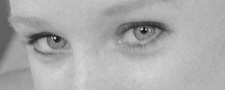

Te di mis ojos. Te di mis ojos durante un año. Como reacción al dolor, me mutilé a mí mismo. Un poco por la misma razón que se da un puñetazo sobre la mesa, o un golpe contra la pared.
Te di mis ojos para cavar un aliviadero en el alma, para que todo el dolor drenara a través de las órbitas vacías. Te di mis ojos para refugiarme en mí mismo, para olvidar a los demás, y para tener una buena excusa frente a ellos.
Te di mis ojos sin hacer sacrificio. Como quien deja a un lado un fardo. Te di mis ojos
para guardarme en tu recuerdo y olvidar la realidad. Te di mis ojos y compré un display más
grande, y perdí la receta de los lentes, y grabé Kodo. Y estoy seguro de que hay alguna
relación... pero no puedo verla.

 Volver al Inicio
Volver al Inicio